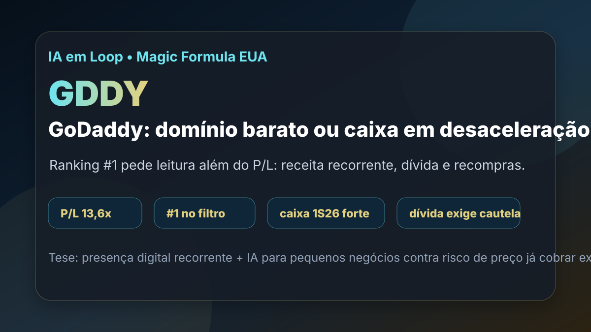

24/08: GDDY, GoDaddy e o preço da presença digital
GoDaddy apareceu em 1º lugar na Magic Formula EUA do IA em Loop. A pergunta central é direta: domínio, presença digital e ferramentas de IA formam um caixa recorrente barato, ou o múltiplo baixo já reflete risco de crescimento limitado?

Quando uma empresa de software aparece barata, a disciplina é separar recorrência real de crescimento que o mercado já não acredita que virá.
Resposta curta: barato no ranking, mas não simples no balanço
Na base dolarizada do IA em Loop com data-base de 06/08/2026, GDDY aparece em 1º lugar na Magic Formula EUA, com P/L de 13,64, P/L projetado de 8,32, EV/EBITDA de 10,34, earnings yield de 7,33% e preço observado de US$ 91,77. O filtro enxerga uma combinação rara: preço moderado, lucro relevante e retorno contábil muito alto.
A conclusão prática é: GoDaddy parece barata como triagem quantitativa, mas a tese exige cuidado com dívida, recompras e crescimento. O negócio tem recorrência em domínios e presença digital para pequenos negócios; ao mesmo tempo, o balanço mostra patrimônio líquido muito comprimido, o que distorce métricas como ROE e pode fazer a qualidade parecer mais alta do que realmente é.
O que os documentos verificados mostram
A consulta à SEC no CIK 0001609711 mostra 10-Q arquivado em 31/07/2026, referente ao trimestre encerrado em 30/06/2026. No segundo trimestre de 2026, a GoDaddy registrou US$ 1,298 bilhão de receita, US$ 342,5 milhões de lucro operacional e US$ 240,1 milhões de lucro líquido.
No primeiro semestre de 2026, a receita somou US$ 2,565 bilhões, o lucro líquido foi de US$ 454,7 milhões e o caixa operacional alcançou US$ 914,0 milhões, acima dos US$ 784,6 milhões do primeiro semestre de 2025. Esse é o lado positivo da tese: o negócio ainda converte presença digital em geração de caixa relevante.
O lado que pede cautela está na estrutura de capital. Em 30/06/2026, a companhia mostrava US$ 1,156 bilhão em caixa e equivalentes restritos, US$ 3,774 bilhões em dívida de longo prazo total e apenas US$ 6,7 milhões de patrimônio líquido. No primeiro semestre, também foram registrados US$ 824,4 milhões em recompras de ações. Recompra pode aumentar retorno por ação, mas, quando reduz muito o patrimônio contábil, deixa indicadores como ROE menos úteis.
| Métrica verificada | Período/fonte | Valor | Leitura |
|---|---|---|---|
| Receita | SEC 2T26 | US$ 1,298 bi | base recorrente de domínios, presença digital e serviços |
| Lucro operacional | SEC 2T26 | US$ 342,5 mi | margem operacional relevante para software/serviços |
| Caixa operacional | SEC 1S26 | US$ 914,0 mi | boa conversão em caixa antes de decisões de capital |
| Recompras | SEC 1S26 | US$ 824,4 mi | retorno ao acionista, mas aumenta a importância do preço pago |
| Dívida total de longo prazo | SEC 30/06/2026 | US$ 3,774 bi | alavancagem relevante para monitorar |
Por que GoDaddy importa para o investidor
GoDaddy está numa camada básica da economia digital: registrar domínio, montar site, hospedar presença online, vender ferramentas de marketing, e-mail, pagamentos e produtividade para micro e pequenas empresas. O cliente não compra apenas tecnologia; compra a possibilidade de existir e vender na internet.
Essa recorrência é o que torna a tese interessante. Se a companhia conseguir vender serviços adicionais, inclusive recursos de inteligência artificial para criação e gestão da presença digital, a receita por cliente pode crescer sem depender apenas de novos domínios. Mas a tese não pode virar história bonita sem número: o que importa é receita, margem, caixa livre e retenção.
GDDY é uma candidata de ranking que merece estudo, não uma compra automática. O preço parece razoável frente ao lucro e ao caixa, mas o investidor precisa exigir prova de que a empresa consegue crescer sem aumentar demais a alavancagem ou destruir valor em recompras feitas a preços ruins.
O que favorece e o que ameaça a tese
Favoráveis
• Demanda recorrente por domínios e presença digital.
• Receita e lucro operacional relevantes no 2T26.
• Caixa operacional do 1S26 acima do 1S25.
• P/L e EV/EBITDA moderados na base local.
• Potencial de venda cruzada com ferramentas digitais e IA.
Desfavoráveis
• Patrimônio líquido muito baixo distorce o ROE.
• Dívida de longo prazo relevante exige disciplina de caixa.
• Recompras grandes só criam valor se feitas com margem de segurança.
• Competição forte em hospedagem, sites, comércio digital e ferramentas para pequenos negócios.
• Crescimento menor pode transformar o múltiplo baixo em armadilha de valor.
Checklist para acompanhar daqui em diante
| Ponto | O que monitorar | Se piorar |
|---|---|---|
| Receita por cliente | adoção de serviços extras, IA e presença digital completa | a tese fica dependente de domínios maduros |
| Caixa operacional | crescimento do caixa antes de recompras e dívida | o balanço perde folga para alocação de capital |
| Recompras | volume, preço implícito e impacto por ação | capital pode ser usado sem margem de segurança |
| Dívida | juros, vencimentos e relação com EBITDA/caixa | a tese passa de software recorrente para risco de balanço |
| Concorrência | preço, retenção e diferenciação dos produtos | margem e crescimento podem comprimir juntos |
Conclusão
A resposta para a pergunta do post é: GoDaddy parece barata o suficiente para entrar no radar, mas ainda precisa provar que recorrência e IA compensam alavancagem e maturidade do negócio. O ranking chama atenção pelo preço; o 10-Q mostra caixa forte; o balanço lembra que o retorno contábil não deve ser lido de forma automática.
Na régua do IA em Loop, GDDY é uma pauta de estudo para possível acompanhamento, com gatilho principal em geração de caixa e execução comercial. A tese melhora se receita e caixa continuarem crescendo com dívida controlada; piora se o crescimento desacelerar e as recompras virarem a principal fonte de melhora por ação.